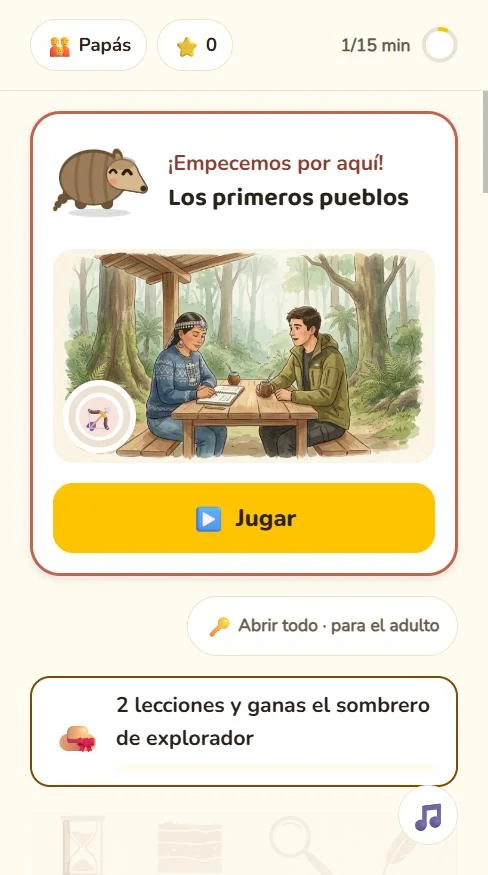
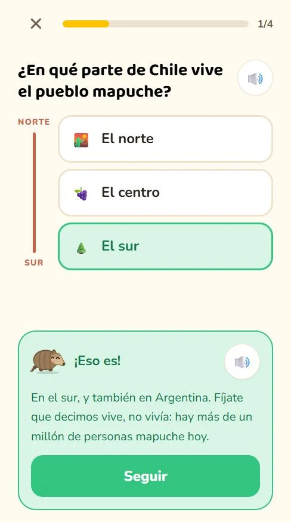
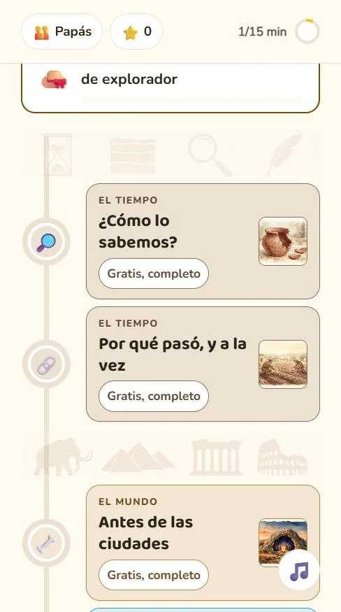
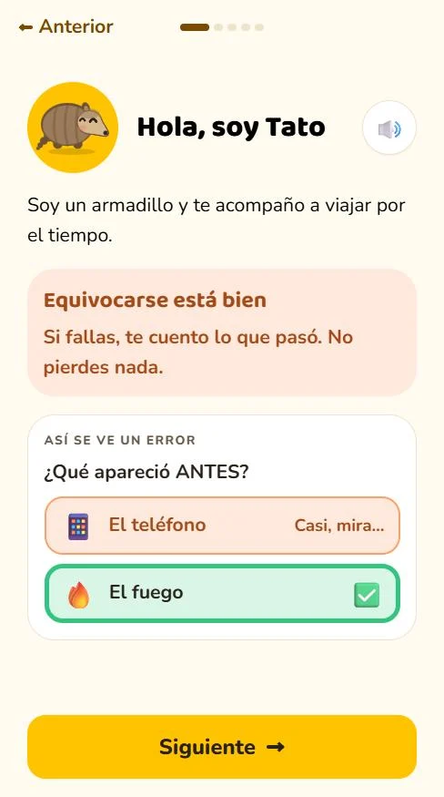
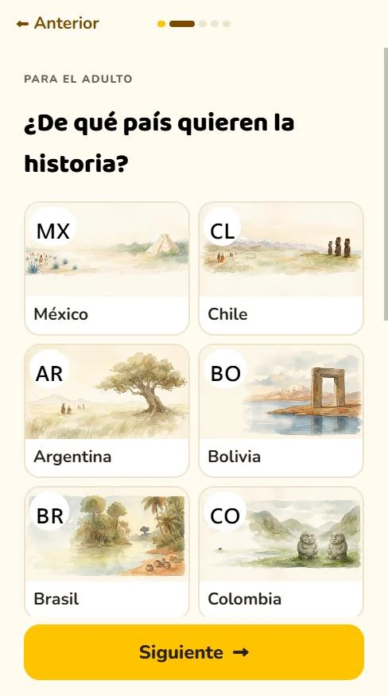
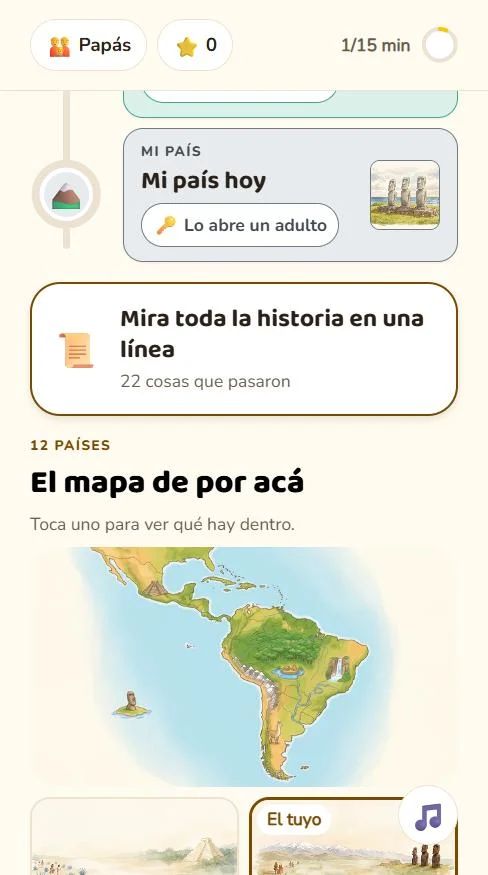
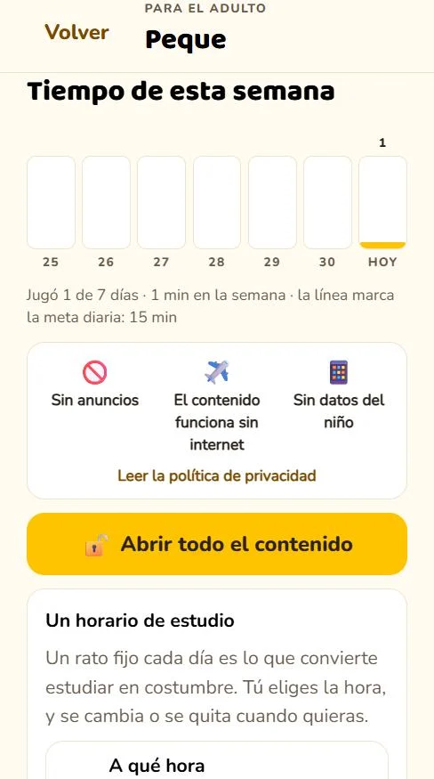
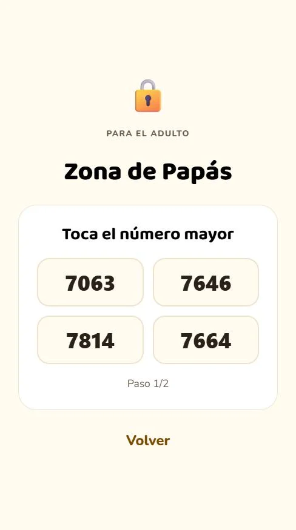

Qué aprende
Una fecha suelta no es historia.
Casi todas las apps de historia empiezan por los hechos. Cronobu empieza por lo que hace falta para entenderlos: qué es «antes», qué es un siglo, qué quiere decir a.C. y cómo sabemos lo que sabemos. Recién después vienen las cuevas, Egipto, Roma y las máquinas — y al final, tu país.
-
Gratis para siempre5 temas enteros¿Cómo lo sabemos?Por qué pasó, y a la vezAntes de las ciudadesLas primeras ciudadesLos primeros pueblos
-
El tiempolas herramientas, primeroAntes y despuésLa línea de tiempoAños, siglos y el a.C.Mapas y lugares
-
El mundode las cuevas a las máquinasEgiptoGreciaRomaLa Edad MediaCuando los mundos se encontraronInventos que cambiaron la vidaCuando llegaron las máquinas
-
Tu paísuno de doce, completoLos primeros pueblosDos mundos se encuentranLa independenciaNace la repúblicaMi país hoy
Por dentro
Así se ve.








Cómo se cuenta
En historia, las decisiones difíciles hay que tomarlas.
Una app de matemáticas no tiene que decidir cómo contar una suma. Una de historia sí tiene que decidir cómo contar una conquista. Acá están tomadas, y escritas, para que un adulto sepa qué va a oír su hijo antes de que lo oiga.
-
Los pueblos originarios, en presente
Los mapuche, los mexicas, los guaraní y los aymara no son un capítulo que terminó. Hay más de un millón de personas mapuche hoy, y cuando el niño responde, Cronobu se lo dice con esas palabras.
-
El encuentro, desde los dos lados
No es el descubrimiento de nadie: dos mundos que no se conocían se encontraron, y a uno le costó muchísimo más que al otro. Lo que dolió se dice una vez, con claridad y sin escena.
-
Se detiene antes de la política de hoy
El relato de cada país llega hasta la república y para. Nada de partidos ni de gobiernos de los últimos cincuenta años: un niño de ocho años no necesita que una app le diga qué pensar de eso.
Para el papá o la mamá
Lo que no vas a encontrar.
-
Sin publicidad
Ninguna, en ninguna parte, ni siquiera de las otras apps nuestras dentro de la pantalla del niño. No hay identificador de publicidad.
-
Sin internet y sin datos
Funciona en modo avión y el avance se guarda en el teléfono. La red no se usa nunca para el contenido. Sin micrófono, sin cámara, sin ubicación y sin registro.
-
Sin compras del niño
En la pantalla del niño no aparece nunca un precio. La suscripción la abre un adulto, detrás de una puerta que se cruza tocando dos veces el número mayor.
Lo que sí vas a encontrar
Sabes en qué anda flojo, y la app insiste ahí.
Cada día hay un reto distinto, y no es el mismo para todos: se arma con lo que a tu hijo le costó. Vos ves qué terminó, en qué habilidad va atrasado y cuánto tiempo usó — sin notas y sin comparaciones con nadie.
-
Una meta en minutos, no en lecciones
Vos fijás cuántos minutos por día, y cuando se cumplen la app celebra que toca parar. También podés ponerle un horario de estudio: un solo aviso al día, a la hora que elijas, nunca de noche.
-
Varios hijos, cada uno con su avance
Y si cambiás de país, no se pierde nada: el avance de cada país se guarda aparte. Los doce están dentro de la app, no se descargan.
-
Se juega sin saber leer
Cada pregunta se dice en voz alta y se responde tocando una imagen. Las que necesitan verse se ven: la olla rota que hay que interpretar, el acueducto, el altar de Día de Muertos. Son 240 ilustraciones hechas a mano, una por lo que pregunta cada una.
Cuánto cuesta
Cinco temas enteros, gratis.
Gratis para siempre
Los cuatro primeros temas completos —«¿Cómo lo
sabemos?», «Por qué pasó, y a la vez», «Antes de las ciudades» y «Las primeras
ciudades»— y el tema con que arranca la historia de tu
país, también entero.
No son una muestra recortada: son temas terminados, con sus lecciones y sus
actividades. Es suficiente para saber si esta app es para ustedes antes de pagar
nada. Los quince restantes se abren con una suscripción que solo activa un adulto,
detrás de la puerta, y se cancela cuando quieras desde Google Play.
Para que una fecha deje de ser un número suelto.
Primero el tiempo, después el mundo, y al final tu país — escrito para tu país y no traducido de otra parte.